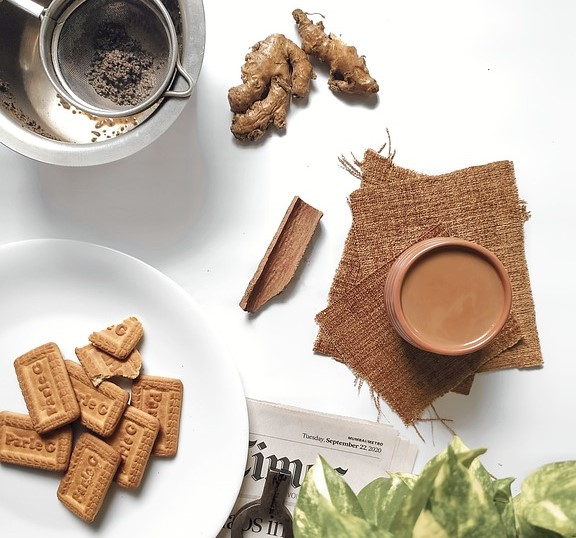
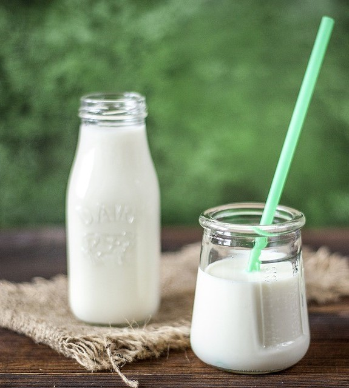
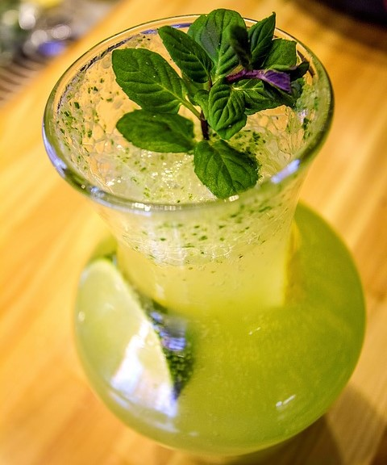

Masala Chai
Masala Chai is a popular Indian tea made by brewing black tea with a mixture of aromatic Indian spices and herbs. It is a great beverage to warm you up on a cold day, or to give you a little energy boost when you need it.
Ingredients:
- 2 cups water
- 1 cup milk
- 1 tablespoon loose black tea
- 2-3 cardamom pods, crushed
- 1 cinnamon stick
- 1-2 slices fresh ginger
- 1-2 teaspoons sugar, to taste
Directions:
- Add water, cardamom, cinnamon, and ginger to a saucepan and bring to a boil.
- Add loose tea and let it steep for 2-3 minutes.
- Turn heat to low and add milk and sugar. Simmer for another 3-4 minutes.
- Strain the mixture into a cup and enjoy!
Chaach
Chaach, also known as buttermilk, is a refreshing Indian drink made by blending yogurt with water and spices. It is a great accompaniment to a spicy meal or as a mid-day snack to cool you down.
Ingredients:
- 2 cups plain yogurt
- 1 cup water
- 1/2 teaspoon roasted cumin powder
- 1/4 teaspoon salt
- 1/4 teaspoon black pepper
- 1-2 mint leaves, chopped (optional)
Directions:
- In a blender, combine the yogurt, water, cumin powder, salt, and black pepper. Blend until smooth.
- Pour the mixture into glasses and garnish with chopped mint leaves, if desired.
- Serve chilled.
Shikanji
Ingredients:
- 2 cups water
- 1/2 cup fresh lemon juice
- 1/4 cup sugar
- 1/4 tsp black salt
- 1/4 tsp roasted cumin powder
- 1/4 tsp black pepper powder
- A pinch of salt
- A handful of fresh mint leaves
Directions:
- Combine water, lemon juice, sugar, black salt, roasted cumin powder, black pepper powder, and a pinch of salt in a large pitcher.
- Stir until the sugar is dissolved.
- Add fresh mint leaves and stir.
- Refrigerate for at least 1 hour to let the flavors meld.
- Serve over ice.